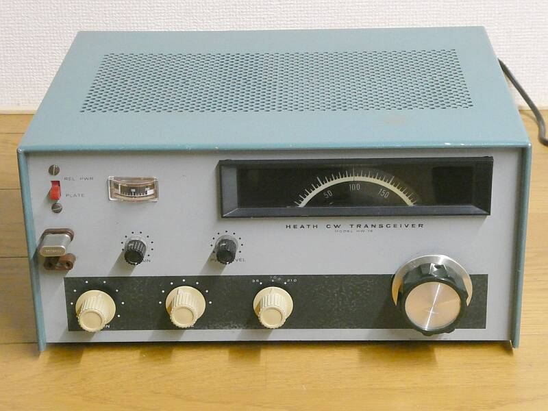
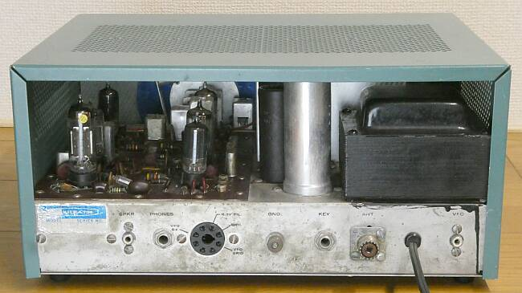
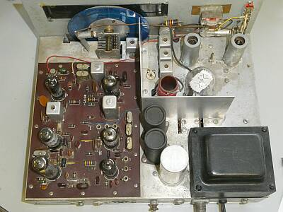
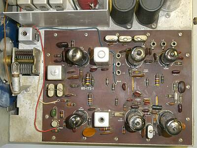
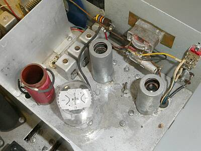
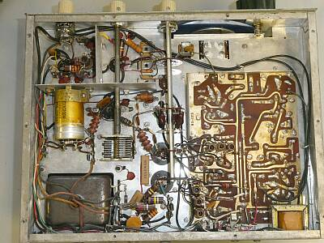
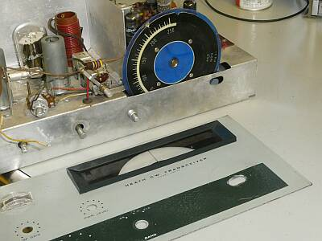
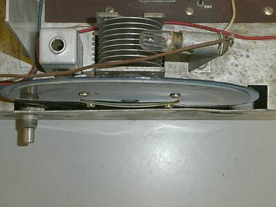
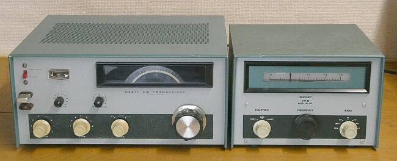

この写真では分かりづらいですが、淡いブルーバックで落ち着いた雰囲気のメインダイヤルです |
Ｈｅａｔｈ-Ｋｉｔより、ＵＳノービスクラス向けのトランシーバーが登場しました
１９６７年頃より発売され、１０年くらい続いていたと思います
３．５／７／２１ＭＨz帯に対応 モードはもちろんＣＷのみ、入力は最大９０Ｗ
５０～９０Ｗ入力まで、フロントパネルに配されたＶＲで可変できるようになっています
プレート電流計のスケールに１５０ｍＡの赤マークがついていますので、ノービスクラスの人は、ここまでの範囲で使用しなさいということかと（５００Ｖｘ１５０ｍＡ ノービスは入力７５Ｗまで）
送信は、３ステージ 終段は、６ＧＥ５というＴＶ水平出力管
受信は、高１中１のコリンズタイプのダブルスーパーヘテロダイン方式
１ｓｔＩＦ：５ＭＨｚ台で、バンドパスフィルタを内蔵
２ｎｄＩＦ：３３９５ＫＨｚは、２クリスタルによるＩＦフィルタが採用されています
２ｎｄＯＳＣ（ＶＦＯ）は、１．９～２．１５ＭＨｚの２５０ＫＨｚ幅を発振
受信ＴＯＰのＡＮＴコイルは、終段のπマッチと兼用で（ＡＮＴ切替リレーは無い）、キー操作によるバイアスの切り替えにより、送受の切り替えは、いわゆるフルブレークインです
ネオン管による簡易な発振回路ですが、サイド・トーンも用意されています
送信用にＶＦＯの内臓はなく、クリスタルのみですが、ＶＦＯは外部にて対応、純正ではＨＧ-１０、ＨＧ-１０Ｂ（本ページ最後にご紹介）の用意があります
本機ですが、基本はちゃんと押さえてあり、十分実践に耐える能力があると思います
３５０W ｘ ２９２Ｄ ｘ １６５Ｈ（ｍｍ） 重量 約９Ｋｇ
ＡＣ電源を内蔵 使用真空管数 ９球 |
|
リアパネルは、下段写真の通り極めてシンプルです
左からスピーカー端子、ヘッドフォン端子 ＶＦＯ接続コネクタ、アース端子、キー端子、アンテナ端子、電源コード、ＶＦＯ入力端子です |
 |
余談
アメリカン・ノービスクラス（ＨＦ ＣＷ と、ＶＨＦ ＣＷ＆Ｐｈｏｎｅ 入力７５Ｗまで）
ＨＦ帯は、８０・４０・１５ｍの３バンド
ＣＷに限定で、運用可能な周波数範囲も制限され
３．７００～３．７５０ＭＨｚ
７．１５０～７．２００ＭＨｚ
２１．１００～２１．２５０ＭＨｚ
となっていました
ＵＳでは、ライセンスによって運用周波数（バンド内）の制限があるのが普通です |
 |
シャーシ上面
受信部は、プリント基板１枚
送信は３ステージで、フロントパネル側に配置
その後ろが電源部となっています |
 |
受信部はプリント基板１枚に納められています
左端はＶＦＯ－ＶＣ
１９００～２１５０ＫＨｚ間、２５０ＫＨｚをカバーします
クリスタル
基板上に見える３つはバンド切替用
左端の2個は、ＩＦフィルタ用（帯域幅５００Ｈｚ）
右下の1個は、ＢＦＯ用
２ｎｄＩＦは、３３９５ＫＨｚです |
 |
送信部のアップ
メーター切り替えは、終段プレート電流とＲＦ出力表示の２種で、受信Ｓ表示はありません（メータは、シールドしてあります）
終段は、６ＧＥ６というＴＶ水平出力管
１２Ｐマグノーマルソケットにプレートが出ています（トッププレートではない）
πマッチの調整ＶＣはありません、固定コンデンサをバンドＳＷで切り替えるのみです
クリスタルソケットは、ＦＴ２４３とＨＣ６/Ｕの2つが並列で用意されています
|
 |
シャース底面
組立キットとしては、ちょうど良い加減の作業量では無いかと思われます |
 |
パネル変形
ＶＦＯツマミ（メインダイヤルツマミ）を強打したようで（多分、落下事故））、ＶＦＯのフリクションドライブが正常に駆動できず、またダイヤル板も回転途中で引っかかったりします（回ったり回らなかったりする）
プラスチックハンマを使って素人板金です |
 |
パネルのみならずシャーシも変形が見られます
ダイヤル板の留めビスが当たる、あるいはダイヤル板そのものがバンドSWに当たるような状態
フリクションドライブシャフトも曲がっています
出来る範囲で修正し、再組立てを行いました
メインつまみが同心円では回らないのですが、実用上問題ないように修正出来ました |
| |
|
|
今回の手当のメインは、受信ＶＦＯダイヤル機構
正常に回らない＝正常に受信できない、です
素人板金＋で、実用上問題の無いように対処できました
電気的性能について
ＣＷトランシーバとして必要かつ十分な機能が持たせてあり、キットを組み立てる楽しさ、そのうえでの運用の楽しさが得られる優れものだと思います
今の日本では、このような無線機の使用免許が容易に受けられなくなった現実があります
無線技術の発展には、逆行の動きと思ってしまうところです・・・
さて、最後に計測した結果について（ＡＣ１１５Ｖにて）
必要な接点クリーニング、トラッキング調整などを行った後の結果です
受信は、ゲインの差／音量の差がありますが、感度としては３バンドとも ０．５μVの信号ＯＮ－ＯＦＦによるＳ／Ｎ比は１０ｄｂ以上取れています（規格は１μＶにおいて、Ｓ／Ｎ１０ｄｂ以上）
周波数安定度も、まずまず良好です
IF増幅１段のせいもあるのでしょう、セットノイズ（残留ノイズ）レベルは極めて低いです
送信出力においては、手元の７ＭＨｚ台のクリスタルを使用して（従って、３．５ＭＨｚ帯は未計測）
７ＭＨｚ帯 ４０Ｗ弱
２１ＭＨｚ帯 ３０Ｗ弱
が、現状のままでの最大出力でした
出力πマッチの調整ＶＣはないので、ドライブ調整（ＲＦ調整）ツマミで最大出力点を得るだけと、操作は極めて単純です
アンテナは、そこそこのマッチングの取れたものの用意が必須ということにも繋がります
ネオン管によるサイド・トーンは、ピーではなくブーに近い低い音色ですが、送受切替に関してはフルブレークインで快適です
この場合、採用するとリリース時間が問題になる受信時のＡＧＣは不採用、手動のＲＦゲイン調整で対応です |
|
Ｈｅａｔｈ-Ｋｉｔ ＨＧ-１０Ｂ
 |
ＨＧ-１０Ｂ
３．５ＭＨｚ帯～１４４ＭＨｚ帯の送信機に対応
| ３．５ＭＨｚ帯 ｘ１ |
３．５００～４．０００ＭＨｚ |
| ７ＭＨｚ帯～２８ＭＨｚ帯 ｘ１～ｘ４ |
７．０００～７．４２５ＭＨｚ |
| ５０ＭＨｚ帯 ｘ６ |
８．３３３～９．０００ＭＨｚ |
| １４４ＭＨｚ帯 ｘ１８ |
８．０００～８．２２２ＭＨｚ |
４バンド(７バンド）に切り替えて対応できる、とても器用？なＶＦＯです
関係して、ダイヤル表示もユニークです
|
|
|
 |
 |
ダイヤル表示機構です
バンドＳＷに連動して、表示ダイヤルが回転するようになっています
当時、糸掛け機構が、一つの技術でした |
 |
シャーシ上面
真空管は、定電圧放電管を含めて２本のみ
発振・バッファは、五極三極の複合管一本で
機構的にしっかりしています |
 |
シャーシ底面
ダイヤルは、ギア機構によりＶＣを駆動します
おおよそ１３回転でフルスケールです
３．５／７／８ＭＨｚ帯の発振コイル３個が見えます
良い（高周波的に）部品が採用されています
|
 |
リアパネルです
送信機接続（電源給電）用ＧＴプラグ付きケーブル、ＶＦＯ出力（ＲＣＡ-Ｊ）、そしてＣＷ-ＫＥＹ入力ジャックです
ＨＧ-１０という製品が出ていたようですが、１０Ｂとの違いはよく分かりません、一見同じように見えます |
|
|
| ＨＷ－１６ トランシーバと、ＶＦＯ ＨＧ－１０Ｂを並べてみました |
 |